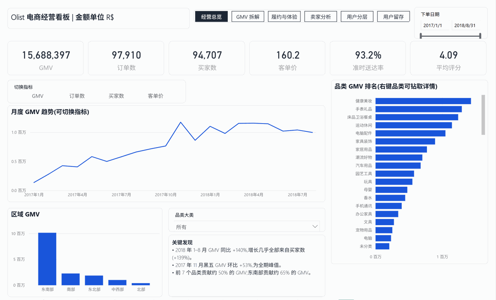
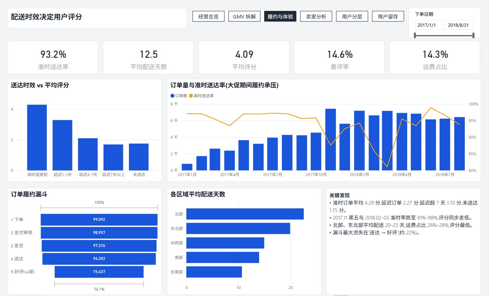
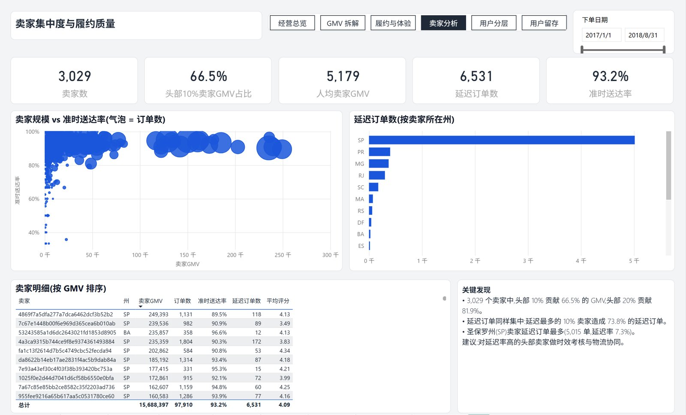
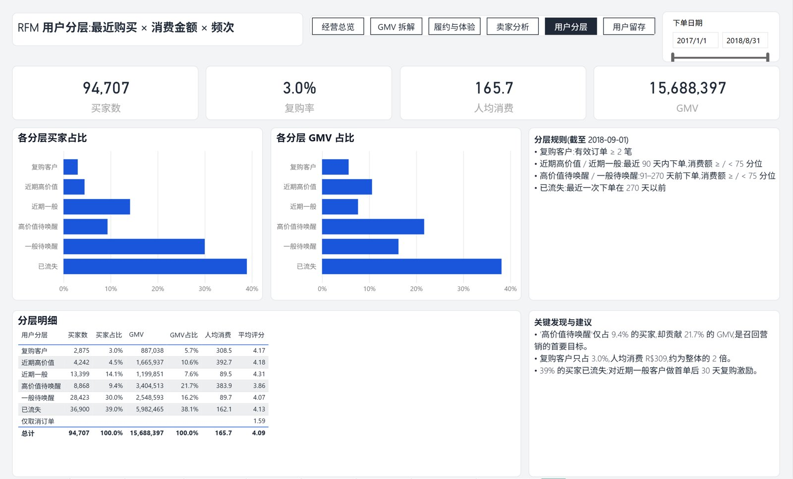
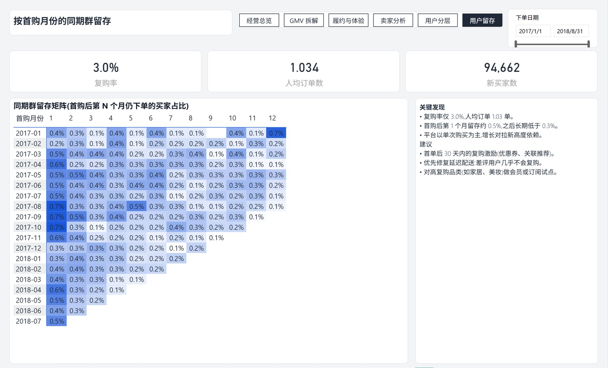

基于巴西电商 Olist 公开的 10 万笔订单、9 张业务表,完成数据清洗、星型建模、指标体系和交互看板,回答"增长从哪里来、问题出在哪里、该对谁做什么"。 Built on Olist's public data (100k orders, 9 tables): cleaning, a star schema, a metric layer and an interactive dashboard that answer where growth came from, what is going wrong, and who to act on.





customer_unique_id 识别真实买家(customer_id 每单一个,会让复购率变成 0);订单 / 商品双粒度事实表 + 四张维度表,并以对账断言校验 GMV。Definitions & model: buyers identified by customer_unique_id (customer_id is per order and would make repeat rate zero); order- and item-grain facts with four dimensions, and GMV reconciled by assertion.TOPN 头部卖家集中度、随所选指标变化的动态标题。33 DAX measures: time intelligence, repeat rate, funnel conversion, TOPN seller concentration, and dynamic titles that follow the selected metric.top 是 DAX 保留字。另一个是 BLANK() = FALSE() 为真,导致未送达订单被算成"延迟",圣保罗州卖家的延迟订单数因此从 6,546 修正为 5,015。
How I know the numbers are right: SQL and the Power BI model compute everything independently, and DAX queries reconcile them line by line. This caught two bugs. One was that top is a reserved DAX word. The other was that BLANK() = FALSE() evaluates to true, which counted undelivered orders as late; São Paulo sellers' late orders went from 6,546 to 5,015 after the fix.